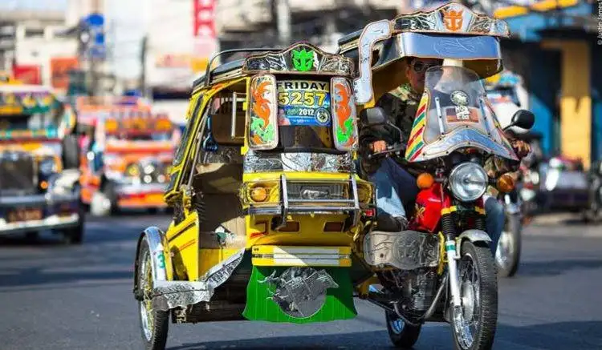
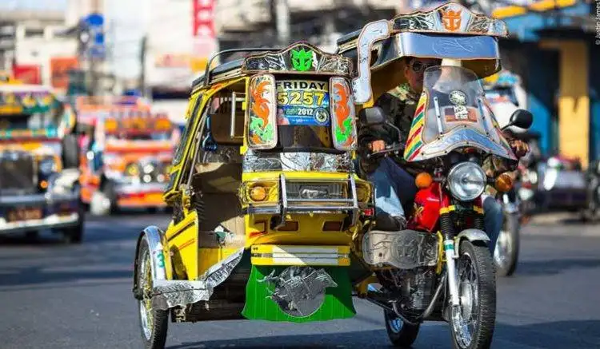

Tricykol
Your Smart Online
Transportation Solution
Tricykol
-
Tricykol- is an innovative online hailing app designed to revolutionize tricycle transportation in Paniqui, Tarlac, bridging traditional services with modern technology.
- "Tricycle"
- "Tricycle ni Angkol"
- "Traysikol" - cebuano
- Tricycle + Traysikol
-
=
Tricykol
 

- tricyle in paniqui
- Population
- Teenagers, students, women, and seniors, are using tricycles as a mode of transportation for their daily commute
Challenges in Mobility
- Inefficient dispatching leading to uneven tricycle distribution
- Inconsistent and sometimes unfair fare calculation
- Difficulties in booking tricycles, especially during peak hours
- Safety concerns, particularly for vulnerable groups
- Lack of real-time tracking for emergency response and performance monitoring
- Absence of a centralized system for managing tricycle operations
Tricykol's Roadmap to Success
Tricykol's Roadmap to Success
Design and implement a user-friendly mobile application for efficient tricycle booking and dispatch
Integrate real-time tracking and route optimization features
Measure the app's effectiveness in promoting digital literacy and inclusion
Develop a standardized fare calculation system ensuring transparency and fairness
Implement safety measures including driver verification and emergency alerts
Develop a scalable model adaptable to other municipalities
Expected Outcomes
Expected Outcomes
- Improved urban mobility with reduced wait times and optimized routes
- Increased earnings for tricycle drivers through efficient operations
- Enhanced passenger safety, particularly for vulnerable groups
- Reduced environmental impact through optimized routing and reduced idle time
- Valuable data insights for urban planners and policymakers
- Increased digital literacy and inclusion in the community
- Standardized, transparent fare system building trust between drivers and passengers
Insights from Global and Local Research
Insights from Global and Local Research
-
Public Transportation in the developing nations
-
Evolution of transportation systems in developing countries.
-
Technological innovations addressing traditional transport
inefficiencies.
-
Tricycles in the Philippines
-
Role of tricycles as a primary public transport mode.
- Case Study: Tuguegarao City.
- Growth from 1960s to 2010.
-
Challenges: overcharging, inefficiency, and driver abuse.
- Evolution of transportation systems in developing countries.
- Technological innovations addressing traditional transport inefficiencies.
- Role of tricycles as a primary public transport mode.
- Case Study: Tuguegarao City.
- Growth from 1960s to 2010.
- Challenges: overcharging, inefficiency, and driver abuse.
- Technological Solutions for Tricycles
- Tryke Mobile App
- Reports driver violations and commends positive behavior.
- Traysi Web Application
- Provides fare computation and terminal information.
- Rise of E-Hailing Services in Nigeria
- Growth from two to 22 operators between 2014-2019.
- Benefits of e-hailing for urban transportation.
- Challenges faced by e-hailing services:
- Regulatory issues, competition with traditional transport, safety, and payment limitations.
- Impact and Sustainability in Indonesia
- Positive impact on mobility, pricing, and safety.
- Need for government policies to support infrastructure development.
- Balancing social, economic, and environmental aspects for long-term sustainability.
- Summary of challenges and solutions for traditional transportation.
- Importance of technology in transforming public transportation.
- Future research directions: Sustainability and integration of transportation modes.
Research Design and Methodology
Mixed-Methods Sequential Explanatory Design
Combines quantitative and qualitative data to ensure comprehensive evaluation.
Agile Software Development
Ensures iterative application development based on user feedback.
Quantitative Research
Data Collection
- Surveys: Rider frequency, routes, fare, safety perceptions.
- Transportation Records: Local data on peak times, demand, availability.
Analysis
- Basic statistics (averages, variability)
- Advanced techniques (geospatial, time-series analysis)
Qualitative Research
Data Collection
- One-on-One Interviews: Riders, drivers, city officials.
- Group Discussions: User concerns, feedback on features.
- Open-Ended Survey Questions: App features and adoption challenges.
Analysis
Thematic coding to extract major themes on benefits, challenges, and adoption.
Application Development Process
Agile Methodology
- Sprint Planning: 2-4 week cycles of development.
- Sprint Review: Regular stakeholder feedback.
- Testing and Quality Assurance: Automated and security checks.
- Incremental Deployment: Beta testing in Paniqui.
Technologies
- JavaScript (Frontend)
- Python/Node.js (Backend)
- PostgreSQL
- Google Maps API for GPS Tracking
Key Features
- Booking: Seamless tricycle ride booking via the app.
- Fare Calculation: Distance-based dynamic fare system.
- Real-Time Dispatching: On-demand tricycle dispatch.
- GPS Tracking: Live location tracking for both passengers and drivers.
Safety Features
- End-to-End Encryption: Data protection.
- Guardian Notifications: Alerts for minors.
Data Collection for App Testing
- Interviews & Focus Groups: Feedback from drivers, riders, city planners.
- Usability Testing: Think-aloud protocols for observing user interaction.
- Research Scope: Focus on Paniqui, Tarlac.
- Technology Focus: Android devices, future iOS potential.
- Deployment: Pilot area, potential citywide rollout based on success.
Page Templates
Page Templates
- Homepage
- Create Passenger Account
- Create Rider Account
- For verification
- Requirement submission
- Login Rider/Passenger Account
- Rider Dashboard
- Available Rides
- View Earnings
- Passenger Dashboard
- Booking
- Ride History
Thank You
Questions?